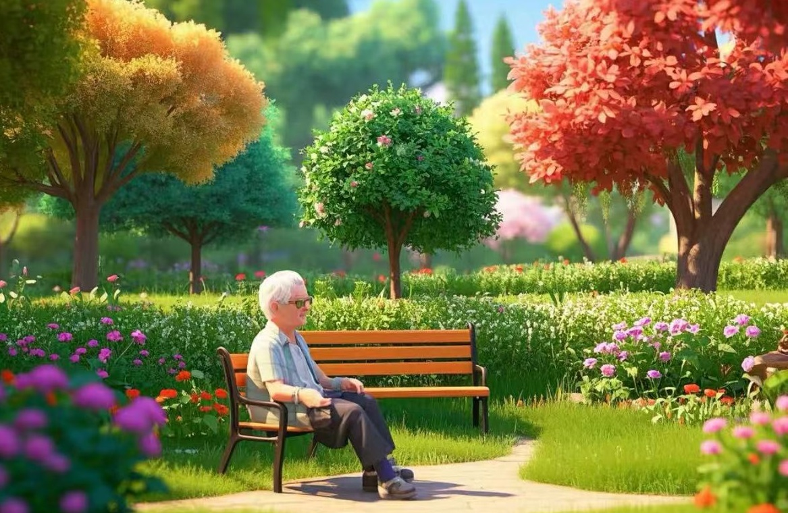

灵境微伴-伴晚亭VR智能养老平台
平台旨在为老年人提供全方位、便捷、高效的智能养老服务体验。整合VR技术、智慧健康管理、社交互动、文化娱乐和智慧生活照料等功能为一体，打造一个综合性的智能养老平台，满足老年人多样化、个性化的需求
关于我们
“伴晚亭”致力于打造一个多元化、综合化的养老服务平台，其核心产品“CompFamily”是一款以VR头戴式设备为主体，并搭配相关软件，旨在为用户提供卓越使用体验的智能养老产品。
我们的服务
银发社交
VR 银发社交开启，打破距离局限，老友新朋畅聚，多彩互动随心，专属空间助老人重焕活力风采。
虚拟旅游
VR 虚拟旅游，足不出户览胜景。沉浸异域风情，穿越古今奇境，随心畅行无拘，开启独特梦幻之旅。
康复训练
VR 康复训练，沉浸式体验激发潜能。精准模拟场景，增强锻炼趣味，助力患者高效康复，重拥健康生活。
辅助功能
创建亲人虚拟人，情感有依。以虚拟唤真情，陪伴随心，让思念可触，为心灵寻慰藉，温暖常伴左右。
健康监管
VR 健康监管，实时精准守护。全方位监测数据，智能预警隐患，开启个性化健康管理新篇，护航生活品质。
其他功能
VR 拓展无限可能，多元功能开启新奇体验。深度沉浸感知，激发想象活力，畅享科技魅力，探索未知无边界。

多样化定制化的内容
- 获取适合您的丰富平台应用。
- 高质量的VR生态内容。
- 沉浸式的虚拟现实体验。
- 为日常生活增添一份色彩。
- 加入我们的公共论坛社区参与互动交流。
体验前所未有的便利。
平台服务团队
“专业的客户服务团队和技术顾问!”
JiangXi Province
NanChang
智慧商城
随时随地获取最新内容
旅行体验
- 足不出户参观名胜古迹
产品周边
- 配套的周边商品
辅助个性化定制
- 定制的服务内容
我们的产品整合了VR技术、智慧健康管理、社交互动、文化娱乐和智慧生活照料等功能为一体，打造一个综合性的智能养老平台，满足老年人多样化、个性化的需求的沉浸式陪伴与社交空间，让老人在虚拟世界中与家人朋友、虚拟角色或其他老年用户进行沉浸式的交流互动，助力享受更加健康、快乐和充实的晚年生活
Let
‘s
Start
The
VR Time
Explore